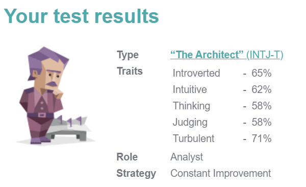
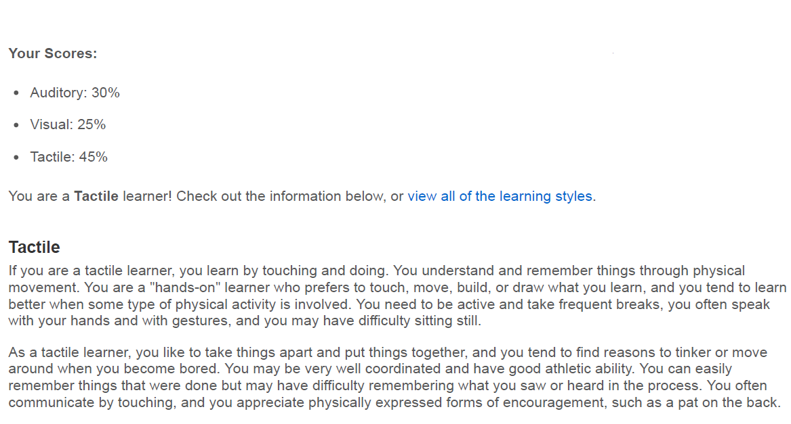
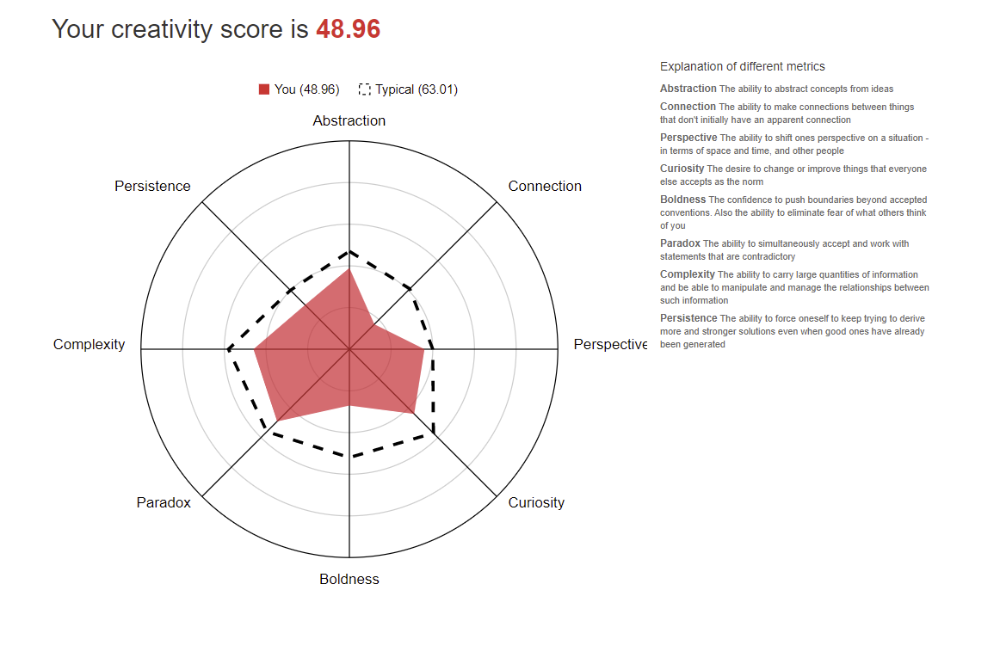

Interest in IT
I have always been interested in gaming and computer hardware, though I always thought of it as a hobby, never thinking that it could ever be a career for me as I didn’t care too much else about the other areas of IT. After taking a few IT based subjects in high school and then later in university, while I was studying another course, I found out that I enjoyed a lot of the content that was being covered. After hating the degree, I was studying I moved over and began studying IT.
Last year I completed my Diploma in IT, feeling a bit disappointed by the delivery of multiple courses and the desire to leave regional NSW, I decided to make the move to Melbourne. Wanting to continue studying and to get my Bachelors. I decided that RMIT was the university for after hearing positive feedback from online and from friends and they offered course that I believed would be more useful than those offered by other intuitions.
I am hoping that through my studies I can gain skills and knowledge that will allow me to have a fruitful career in IT. I am hoping that the content that is presented to me will be more current.
Ideal Job
The job advertisement is from PAN Software, that develops a large cloud-based platform called ‘RiskWare’, used for ‘Enterprise Risk and Safety’. The role is for a .NET expert. They would be responsible for developing and improving a cloud-based API platform. Involvement in the analysing the suitability and then the deployment and testing of future solutions.
The opportunity to be able to work in a cloud development role is what initially excited. With cloud development being a rapidly evolving sector in IT, with many solutions evolving to being cloud based, being part of a constantly developing industry excites me. Being part of a large, pre-established team is also appealing for me. Being able to learn from those who will have different or more experience than mine offers a unique opportunity for personal growth. The pay is another appealing part of the job, being able to earn that amount allow for me to set myself up for a better future.
The skills and knowledge required for the role include experience in .NET technologies, REST and JSON, ASP.NET WebAPI and .NET Middleware. Experience in developing personal identity and identity management for multi-tenant environments would be required. Experience working on projects with a team would also be beneficial in making me look right for the role.
The qualification I currently possess is a Diploma in Information Technology, where I have gained knowledge in an object oriented programming approach using Java.
A plan for future personal development to reach to reach the skills required for such a position would first include achieving a Bachelors in Information Technology. While completing such a course I would need to start developing a portfolio of different projects. The project would need to be varied in terms of technology and problems they attempt to solve to show versatility in skillset. These steps along with the usual job seeking requirements would put me in good standing for such a position.
Personal Profile
Myers-Briggs Test
Personality test results: INTJ-T
Learning style Test
Learning style results: Tactile
Creativity Test
Creativity test score: 48.96
These results do not mean too much to me. I believe that these test try to pigeon whole peoples personalities when often they are more complex that defined types, also people tend to have a subconscious bias (reference here) to try and see themselves into the result and will slightly change their personalities to align.
These results will not change how someone would already work within a group. A leader within the group should quickly see how other members interact and then divide work accordingly for an optimal workflow.
There will always be personalities that are different when new people work together. Too much focus on this will distract from the task that will need to be completed. Structure should be established with the team to help with efficiency.
Project Idea
Overview
The proposed project would be a top-down strategy video game. The game would a turn-based strategy which would require to build units, use them to gain resources and destroy the enemy team. The player would be facing 1 enemy team which would an A.I or local human player. Each team would build units which would be differentiated by different design and stats, allowing each unit to have a role. The map that they would be playing on would be procedurally generated set of time. The game would offer points to each team as an incentive to try a perfect their play.
Motivation
Strategy games have been seeing a resurgence onto the market with games like the recent Age of Empire remasters and Polytopia a few years back making a large splash in the market. Making a small-scale strategy game would require a small upfront investment in resource, with easy future scalability being an option if the game performs well. Currently there are multiple game engines that have a large suite of tools that can have zero upfront costs. All the previous reasons listed show that the product will require a very small upfront costs in an emerging market that has potential to scale to multiple platforms if the game does succeed.
Description
The product proposed will be a top-down 2d turn-based strategy game. The game will put two teams together, with future scalability to potentially add more players with larger maps. Both teams will play on a 2d top-down view map that is procedurally generated for each game, using predefined tiles that will be seemingly randomly stitched together into a playable map. This system can be later expanded if time permits it. Possible expansion includes adding more themed tiles to add diversity to the visual appearance. The tile generation can be altered to favour certain tiles to have different types of maps. E.g. Land-based maps or more sea-based maps. Tiles can eventually be altered to be given distinct properties if time allows. These properties can include different movement speeds, only certain ‘units’ to move through them or apply other status effects. The player each turn will receive each turn an income of ‘resources’. These resources can be used to build ‘units’ that the player will be able to control. To gain additional ‘resources’ each turn, each team can capture different nodes spread across the map. These points will add different locations where each team can fight to create a more varied spread battlefield and so that both teams won’t just attack each other’s main bases. Victory will be achieved once one team destroys the other teams main base by depleting that base of its hit points. There will multiple different types of units, ‘classes’, each varying in design and stats and some will have different abilities. The stats that each ‘unit’ will health points (HP), attack, defence and movement, with each units having a unique mix so create interesting compositions of units.
Tools and Technologies
To design a game all within one team, we will need a game engine to assist in the game’s actual programming, and then we will require programs to help in art and asset design. The game will be built entirely in a game engine called Unity. This engine has been chosen as it offers an extensive suite of tools with a large community of users that can assist in any problem that may be encountered. The engine is also open source meaning there is no cost for using and publishing from it. Unity is also known for being good for some mobile game developed, being light in resource usage. With mobile games being one of the largest platforms for games, it is important to target that market. For art design, initial art concepts will be done practically to discover an art style that will be simple yet attractive to users. For asset production, Adobe Photoshop will be chosen as it is the current industry standard.
Skills Required
There will be three main areas of skills required for the project. Skills using the game engine will be required, understanding how to produce a product with limited resources in a time-constrained environment while making sure that the project can be scaled appropriately. Art and asset design will be an important skill. Being able to develop a style that can be used to quickly and effectively produce new assets. The final skill that will be required is leadership skills that will be needed to coordinate an entire team that will be working on different parts of the product simultaneously, allowing for a seamless production.
Outcome
Upon successful completion of the project, we would have to see if it successful among the open market and if so that will dictate how the project will move forward. If successful, the project will be able to generate a small amount of revenue initially. Porting the application to a mobile format will be able to begin, swapping how some systems work to feel better on touch screens. If the project continues to succeed on more platforms, then more revenue will be generated.